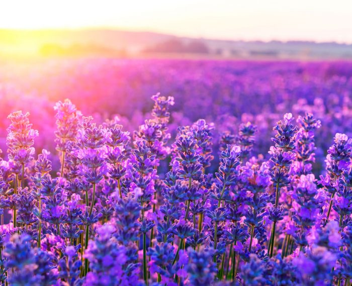
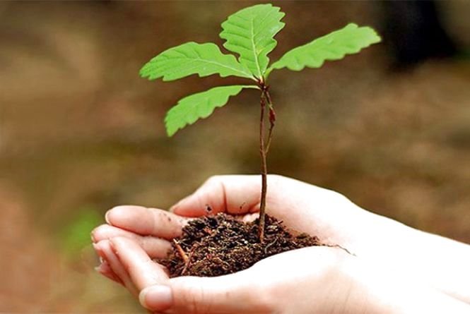
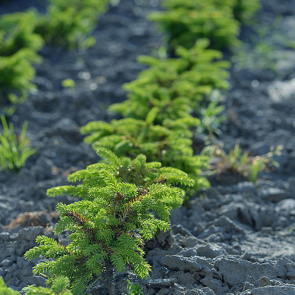
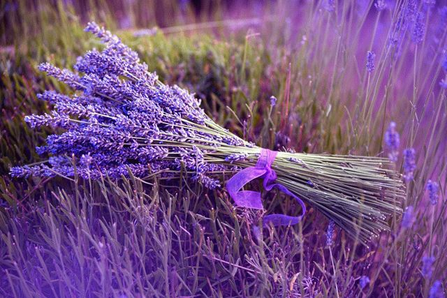
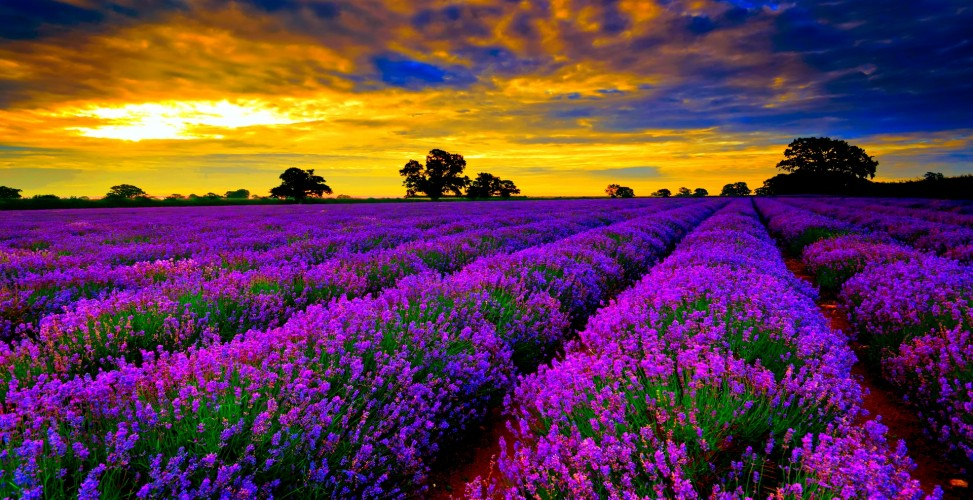

Вплив людини
В даний час людина своєю діяльністю нерідко визначає межі зростання різних рослин, впливає на рослини і їх поєднання.У своїй господарській діяльності людина розширює ареали одних рослин, вводячи їх в культуру в нових районах, наприклад, культивуючи чайний кущ, коркове дерево, бавовна та інші південні рослини далеко на північ від природних кордонів їх зростання.


Осушуючи болота, зрошуючи безводні пустелі, просуваючи землеробство, плодівництво на північ, людина перетворює лик Землі.
Ця роль людини, перетворювача природи цілих районів і областей, особливо наочно виступає в нашій соціалістичній країні і знаходить найбільш яскраве вираження в грандіозному плані полезахисних лісонасаджень в степовій і лісостеповій.
Ця роль людини, перетворювача природи цілих районів і областей, особливо наочно виступає в нашій соціалістичній країні і знаходить найбільш яскраве вираження в грандіозному плані полезахисних лісонасаджень в степовій і лісостеповій.
Заснований на багаторічному і різноманітному вивченні природних умов цієї території, план вважає в основу вчення Докучаєва - Костичева - Вільямса і передбачає насадження лісосмуг, створення штучних водойм та впровадження травопільної системи землеробства.
Вплив людини на навколишнє його природу мало місце, звичайно, з найвіддаленіших часів, але особливо посилився за останній час. Цей вплив може бути несвідомим і свідомим. Коли первісна людина збирав у великій кількості в лісі, в полі, на лузі ті або інші корисні йому рослини, то він цим самим змінював співвідношення достатку різних видів;
Вплив людини на навколишнє його природу мало місце, звичайно, з найвіддаленіших часів, але особливо посилився за останній час. Цей вплив може бути несвідомим і свідомим. Коли первісна людина збирав у великій кількості в лісі, в полі, на лузі ті або інші корисні йому рослини, то він цим самим змінював співвідношення достатку різних видів;



коли він випалював або травив степу, то рослинний покрив зазнав великі зміни і т. д. - все це приклади несвідомого впливу. Несвідоме вплив людини могло призводити до позитивних для людини результатами, але часто тягло за собою негативні зміни рослинності. З іншого боку, несвідомий відбір, вироблений первісною людиною, привів, за Дарвіном, до формування ряду культурних рослин.
Що стосується свідомого впливу людини на рослини, то воно в більшості випадків призводить до позитивних результатів, так як штучний відбір є засобом до покращення тих чи інших видів і до створення нових культурних рослин. В результаті свідомого впливу ми можемо поліпшити також рослинні поєднання і конструювати нові.
Що стосується свідомого впливу людини на рослини, то воно в більшості випадків призводить до позитивних результатів, так як штучний відбір є засобом до покращення тих чи інших видів і до створення нових культурних рослин. В результаті свідомого впливу ми можемо поліпшити також рослинні поєднання і конструювати нові.